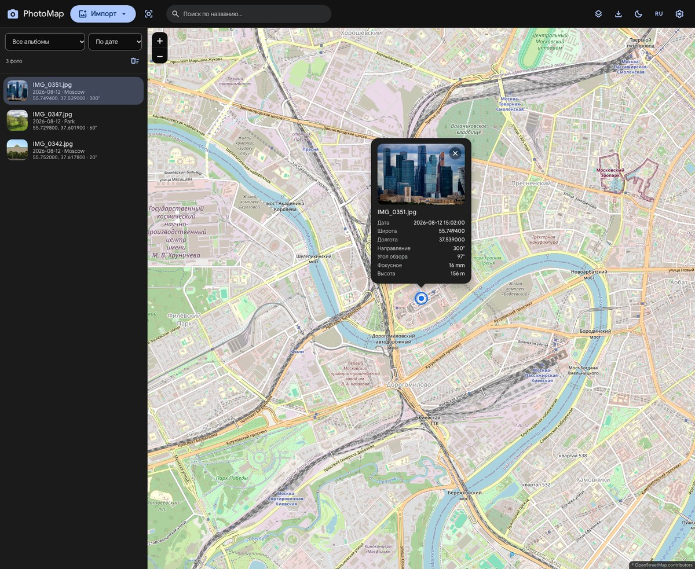

Фото на карте
GPS-координаты из EXIF, кластеризация, поиск по названию, фильтр по альбомам и сортировка по дате или имени.
Бесплатно · Windows · macOS · Linux · Android · Веб
PhotoMap читает GPS-координаты, направление съёмки и фокусное расстояние из EXIF, расставляет снимки по интерактивной карте и показывает сектор обзора. Панорамы 360° можно крутить прямо в просмотрщике.
Всё работает локально: в веб-версии фотографии не загружаются на сервер.

GPS-координаты из EXIF, кластеризация, поиск по названию, фильтр по альбомам и сортировка по дате или имени.
Если камера записала GPSImgDirection, метка показывает сектор обзора. Фокусное расстояние переводится в угол обзора.
Эквиректангулярные снимки открываются в интерактивном просмотрщике: перетаскивание, зум колесом или щипком, авто-вращение.
OpenStreetMap, Яндекс (схема, спутник, гибрид) и Google (схема, спутник, гибрид).
KML и GeoJSON для карт, PNG-снимок текущего вида с легендой, копирование снимка в буфер обмена.
Фотографии не загружаются на сервер. Интерфейс на русском и английском, светлая и тёмная темы, выбор акцентного цвета.
PhotoMap читает стандартные теги EXIF: GPSLatitude и GPSLongitude задают точку на карте, GPSImgDirection — направление камеры, FocalLength и FocalLengthIn35mmFilm — фокусное расстояние и угол обзора.
Для панорам используется XMP GPano (ProjectionType = equirectangular). Файлы без GPS-координат пропускаются. Десктопная версия сделана на Tauri, работает с локальными файлами и обновляется автоматически.
Из EXIF: GPSLatitude/GPSLongitude, GPSImgDirection и фокусное расстояние. Для панорам — XMP GPano.
Нет. В веб-версии всё читается локально в браузере, на сервер ничего не отправляется.
Да. Эквиректангулярные панорамы можно крутить, масштабировать и смотреть с авто-вращением.
Да. Установщики для десктопа и APK для Android публикуются в GitHub Releases; обновления для десктопа приходят автоматически.
KML, GeoJSON и PNG-снимок карты. Снимок также можно скопировать в буфер обмена.
Да. Язык переключается на лету, есть светлая и тёмная темы и выбор акцентного цвета.
Если PhotoMap оказался полезен, можно поддержать проект. В комментарии к донату можно указать, какие функции вы хотели бы видеть в приложении.